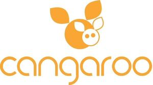

Trade Mark Journal No.2026/003 16 January 2026
WO0000001878807 (5,8,9,10,11,12,20,21,24)
Office of origin: Bulgaria
Date of International Registration:22 May 2025
Date of designation in the UK:
22 May 2025

The mark contains the colours orange and white.
Orange for the word and figurative elements of the mark; white for the figurative elements of the mark.
International priority date claimed: 8 January 2025
(Bulgaria)
(176013)
- Class 5
- Breast-nursing pads; babies' diapers; swim diapers, disposable, for babies; swim diapers, reusable, for babies; diaper changing mats, disposable, for babies.
- Class 8
- Table knives, forks and spoons for babies; nail clippers; scissors for children; nail scissors; manicure sets; spoons; nail files; nail files, electric; tweezers; table knives, forks and spoons of plastic.
- Class 9
- Baby scales; baby monitors; temperature measuring apparatus namely temperature measuring apparatus for household use; digital thermometers, other than for medical purposes; electronic thermometers, other than for medical use; video babyphones; audio- and video- receivers; video baby monitors; video cameras; safety nets.
- Class 10
- Dummies and teats for babies; feeding bottle teats for babies; baby feeding teats; feeding bottle teats; feeding bottles for babies; breast milk pumps; thermometers for medical purposes; nasal aspirators; feeding bottle caps; clips for feeding teats; maternity belts; teething rings; nebulizers for medical purposes; gums massagers for babies; nipple shields for breastfeeding; portable earpicks with endoscopy function; clips for dummies; feeding bottles.
- Class 11
- Baby bottle warmer; appliances for warming baby bottles; sterilisers for babies' feeding bottles; humidifiers; USB-powered cup heaters; baby bottle warmers, including electric ones.
- Class 12
- Pushchair hoods, baby carriages canopies; safety seats for babies for use in vehicles; safety seats for children for use in vehicles; baby carrycots for use in vehicles; baby carriages with carriers; pushchairs; pushchairs with baby carriage; baby stroller baskets; bags adapted for pushchairs; pushchair covers and hoods; fitted pushchair mosquito nets; mirrors for vehicles; child cushioned booster seat for vehicle seats; children seats for vehicles including children safety seats for vehicles; safety seats for children and babies, for vehicles; baby seats for vehicles; head-rests for car seats; baby strollers; rearview mirrors; sun-blinds adapted for automobiles; child seats for vehicles; safety seats for babies.
- Class 20
- Babies' baskets; playpens for babies; babies' chairs; baby mats; baby walkers; woven baby cradles; electric baby swing; portable baby swing; baby rocking cots; mats for baby playpens; bath seats for babies; portable bassinets; head support cushions for babies; children's beds; cots for babies; playpens for children; children's feeding chairs; high chairs for babies; portable infant cots; portable infant beds; sink and bathtub mats for babies; deck chairs; photograph frames; mirrors [looking glasses]; hanging organizers for travel; babies' mats, including babies changing mats; reusable baby changing mats; pads for cushions for use in infant vehicle seats; support pillows for use in baby car safety seats; head-supporting pillows; baby sitting pillows; neck-supporting pillows; pillows for pregnant and breastfeeding women; nursing pillows; baby baskets with handles; pillows; anti-roll cushions for babies; cradles.
- Class 21
- Baby bathtubs, including portable baby bathtubs; stands for portable baby bathtubs; potties for children including chamber pots; bowls, including baby feeding bowls; food storage containers; brushes for infant feeding bottles; brushes for babies' feeding bottles; brushes for cleaning feeding bottles; combs; feeding cups for children; sponges for scrubbing the skin; diaper disposal pails; lunch boxes; inflatable bath tubs for babies; straws for drinking; drying racks for laundry; food steamers; toothbrushes for babies and children.
- Class 24
- Baby blankets; children's blankets, including cots blankets; children's towels; baby bed sheets; place mats of textile; bath mitts; baby bed covers; mattress covers; pillowcases; sleeping bags for babies; quilts; diaper changing cloths for babies.
« MONI TRADE » Ltd
Representative: ANDREY IVANOV ANDREEV, floor 2, 13, "Dunav" street, BG-1000 Sofia, BULGARIA